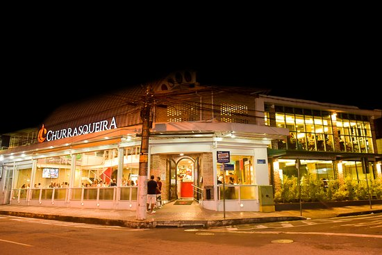

Juiz de Fora
Juiz de Fora é uma cidade localizada no estado de Minas Gerais, próxima à divisa com o Rio de Janeiro, e desempenha um papel importante como centro urbano e turístico. Com uma rica história e uma excelente infraestrutura, a cidade atrai turistas pela sua combinação de cultura, gastronomia e beleza natural. Além de ser um polo regional de negócios e educação, Juiz de Fora possui diversos atrativos turísticos, que vão desde áreas verdes e praças encantadoras até monumentos históricos e museus de grande importância.
Juiz de Fora também é conhecida pelo seu clima ameno e pelas festas tradicionais que promovem a cultura local. É um destino procurado por quem deseja explorar Minas Gerais além das cidades mais famosas, oferecendo uma experiência única com sua tranquilidade, gastronomia rica e diversidade cultural. A cidade também é uma excelente base para quem quer explorar a Serra da Mantiqueira, oferecendo fácil acesso a várias regiões montanhosas de Minas Gerais e do Rio de Janeiro.
Principais pontos turísticos
- Parque da Lajinha
- Praça Presidente Juscelino Kubitschek (Praça JK)
- Museu Mariano Procópio
- Igreja São Sebastião
- Mirante da Serra do Morro do Imperador
O Parque da Lajinha é uma área verde urbana muito procurada para caminhadas, piqueniques e atividades ao ar livre. O parque oferece trilhas ecológicas, espaços para recreação e um ambiente tranquilo, com uma grande diversidade de fauna e flora.
É o principal espaço de lazer da cidade, ideal para quem deseja relaxar em meio à natureza, fazer atividades físicas ou simplesmente aproveitar a vista panorâmica da cidade.
A Praça JK é um dos pontos mais tradicionais da cidade e um local de encontro de moradores e turistas. Com um grande chafariz e rodeada de bancos e áreas arborizadas, é um excelente local para passeios relaxantes.
A praça tem um grande valor histórico e cultural, sendo palco de diversos eventos públicos e culturais, como feiras e apresentações artísticas.
O Museu Mariano Procópio é um dos mais importantes museus da cidade e de Minas Gerais. Instalado em uma antiga residência, o museu conta com um acervo histórico que abrange arte, arqueologia, e uma vasta coleção de objetos ligados à história da cidade e do Brasil. Além disso, o museu possui belos jardins e um ambiente tranquilo.
É uma excelente opção para quem deseja conhecer a história local e regional, com um acervo que remonta a diversas épocas do Brasil, desde o período colonial até o século XIX.
A Igreja São Sebastião é uma das mais antigas e tradicionais de Juiz de Fora. Com sua arquitetura imponente, é um ponto de referência religiosa na cidade. O interior da igreja é ricamente decorado e atrai tanto fiéis quanto turistas pela sua beleza e história.
É uma das mais importantes edificações históricas de Juiz de Fora e um exemplo da arquitetura religiosa da cidade. Sua importância também se estende ao papel cultural que a igreja desempenha nas festividades locais.
O Mirante do Morro do Imperador oferece uma vista panorâmica espetacular da cidade de Juiz de Fora, e é considerado um dos principais pontos turísticos naturais da região. É um excelente local para apreciar o pôr do sol e fazer caminhadas.
Além da vista deslumbrante, o local também tem grande valor cultural e histórico, sendo um ponto tradicional de visitação tanto para turistas quanto para moradores.
Principais pontos gastronômicos
- Restaurante Dona Cuca
- Localização: Centro de Juiz de Fora.
- Churrasqueira São Mateus 
- Localização: São Mateus.
- Café Belas Artes
- Localização: Centro de Juiz de Fora.
- Costelaria Curral
- Localização: BR 040, sentido Belo Horizonte.
O Dona Cuca é um dos restaurantes mais tradicionais de Juiz de Fora, especializado na culinária mineira. Com pratos típicos como feijão tropeiro, frango com quiabo e costelinha de porco, o local oferece uma verdadeira experiência gastronômica da região.
A gastronomia mineira é uma das principais atrações de Juiz de Fora, e o Dona Cuca é um dos melhores lugares para experimentar esses pratos tradicionais com qualidade e sabor.
De um bar modesto, criado em 1987, o Churrasqueira tornou-se um dos restaurantes mais renovados de Minas Gerais. É conhecido como um espaço completo para gastronomia e entretenimento em Juiz de Fora.
Oferece uma experiência gastronômica deliciosa, em um ambiente agradável e tranquilo.

O Café Belas Artes é uma excelente opção para quem busca uma experiência mais casual, com cafés e sobremesas deliciosas. Oferece uma seleção de bolos, tortas e doces caseiros, além de cafés especiais.
É um local perfeito para quem quer fazer uma pausa durante o dia, saboreando um café e uma sobremesa deliciosa em um ambiente aconchegante e agradável.
Este restaurante garante tamboril ótimo e costelas fascinantes. Oferece um amplo cardápio, com comida típica brasileira. Os visitantes consideram os funcionários hospitaleiros.
Se quiser aproveitar bom serviço, deve visitar o restaurante Costelaria Curral. O ambiente calmo satisfaz os clientes e atrai ainda mais clientes.
Principais pontos culturais
- Teatro Solar do Glória
- Localização: Centro de Juiz de Fora.
- Museu de Arte Murilo Mendes
- Localização: Centro de Juiz de Fora.
- Centro Cultural Bernardo Mascarenhas (CCBM)
- Localização: Centro de Juiz de Fora.
- Festa de Nossa Senhora da Glória
- Localização: Bairro Santo Antônio.
O Teatro Solar do Glória é um dos principais espaços culturais de Juiz de Fora, com uma programação variada de peças de teatro, apresentações musicais e eventos culturais. O teatro tem grande importância histórica e arquitetônica, sendo um dos locais mais tradicionais da cidade.
Para quem deseja vivenciar a cena cultural de Juiz de Fora, o Teatro Solar do Glória é um ponto imperdível, oferecendo uma grande diversidade de atividades artísticas e culturais.
O Museu de Arte Murilo Mendes é dedicado à arte moderna e contemporânea, com um acervo de obras de artistas brasileiros e internacionais. O museu também realiza exposições temporárias e eventos culturais.
O museu é um dos maiores centros de arte da cidade, oferecendo uma excelente oportunidade para quem deseja explorar o mundo da arte contemporânea e moderna.
O CCBM é um centro cultural com uma vasta programação, incluindo exposições, shows, peças de teatro e outras atividades culturais. O espaço é um dos principais centros culturais de Juiz de Fora, promovendo a arte e a cultura local.
O CCBM é fundamental para o cenário cultural de Juiz de Fora, proporcionando acesso a diversos tipos de manifestações artísticas e culturais.
A Festa de Nossa Senhora da Glória é uma das principais celebrações religiosas e culturais da cidade. Com procissões, missas e eventos festivos, a festa reúne fiéis e turistas para celebrar a padroeira de Juiz de Fora.
Essa festividade é uma das maiores da cidade, reunindo elementos religiosos, culturais e sociais, e é uma excelente oportunidade para conhecer a religiosidade e as tradições de Juiz de Fora.